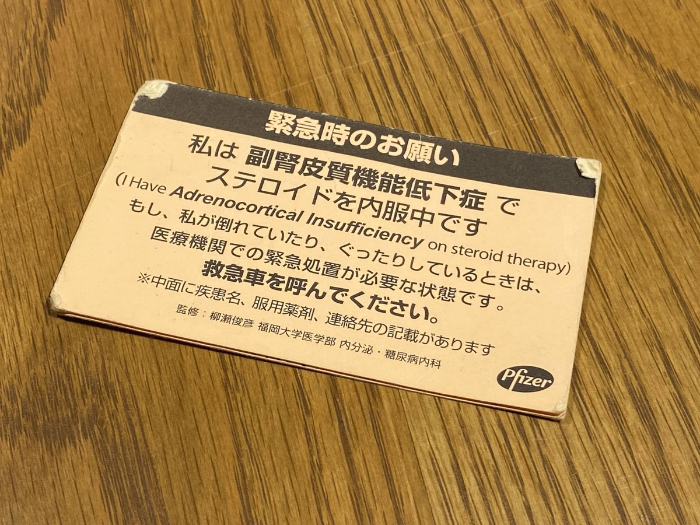

投稿日: 2022/01/10 06:53:32
カテゴリ: 闘病記
サムネイル: 
下垂体前葉機能低下症 (ACTH単独欠損) を持つ自分なのだけれど、2021年になって、正月明けいきなりダウンして幸先の悪いスタートになった。
患者会（下垂会）には参加しているものの、下垂体前葉機能低下症って人によって結構症状が様々で、自分自身の服薬の感覚は自分で掴まないといけないので、当初この病気がわかってからの最初の1, 2年は、よく主治医の先生と連絡を取り合いながら薬の増やし方を練習していた。
最近は感覚で掴んできた感はあったものの、やっぱり冬のように身体ストレスが強かったり、いざ風邪をひいたりしてしんどいと、身体と共に心もしんどくなってよくわからなくなるので、一度自分なりに言語化しておこうと思う。もちろん各個人の症状は主治医の先生と二人三脚で管理していくべきと思うのだけれど、自分自身の備忘録。
ちなみに自分は1日で15mgのコートリルを飲んでいて、朝起きたときに10mg (1錠)、夕方5mg (半錠) 飲んでいる。毎回Google Homeに薬を飲んだと挨拶するのもすっかり毎日の日課となった。（Google Homeを使って服薬記録をとっている方法については後日まとめたい。）
だいたいこの6つ。上4つは多分標準的な基準で、自分は昔から風邪をひいても発熱がないので、発熱という基準はとても分かりづらい。ベッドから起き上がれないときは、だいたい血圧が低かったり、眠くて何度も何度も寝てしまったり、手先が冷たかったりする。
余談だけれど、自分が下垂体前葉機能低下症がわかるきっかけになった、低血糖発作で病院に救急搬送されたときも、胃腸炎で寝込んだまま布団から起きず、冷たいまま一日中起きないのを心配した家族が救急車を呼んでくれたおかげ。自分は意識がなくて全く覚えていないのだけれど…。起きれなくて身体が冷たいときはだいたいヤバいので、そういうときに備えてベッドサイドに薬を常に置いておくようにしている。
で、リストの下２つなのだけれど、筋肉痛があるときはたいてい、前日までの運動量とか仕事量が多すぎて過負荷になっているので、悩むのだけれど多少コートリルを増やしておくとうまくいくことが多い。
最後の心がざわつくというのは、普段瞑想とかマインドフルネスを心がけていて穏やかに感じる自分なのだけれど、それがどうしてもできないときがあって、憂鬱だったり、絶望感を感じて、一種のうつ状態になる日がある。こういう日はたいていコートリルが足りなくてギリギリの状態で身体を保っているのに、感覚が麻痺してて気づけないという日が多い。これは他人がどうか聴いたことがないのでわからないものの、自分はこれに気づいたらすぐに倍量のコートリルを増やすようにしている。そうすると、すぐに心のざわつきも収まるし、ああ病的な感じだったのだとすぐ気づける。
このときとても難しいのが、身体ストレスを感じることができるというのは結構心に余裕があるときで、心に余裕がないと身体ストレスに気づくことが実は結構難しい。心がざわざわするときっていうのはもうそれが限界近いときが多くて、たいてい服薬管理に失敗して数日ダウンしてしまうのは自分はそういう日。
おおよそこの４つ。風邪と感染症は比較的わかりやすくて、自分の感覚では重力が3倍近くに感じて、ベッドからやっとで起きるしかない日。自分発熱がほとんどないので、これすら見誤ることがあるのだけれど、まぁわかりやすい方。
運動量と仕事量の多すぎは、案外気づきにくい。というのも、こういうときってだいたい心は元気だし、脳内麻薬が出てて空元気なので、その日は案外通常の服薬量でも乗り切れる。問題はその2日後とか次の週。ストレスってあとからどかっと身体にくるので不思議。
身体の緊張は、個人的な季節的ストレスと仕事のしすぎに気づくサイン。ここでゆっくり過ごしたり、ツボ押しやマッサージしつつのんびり過ごす余裕があれば良いけど、それすらできなくて凝り固まってるときはだいたいダウンする。
季節的ストレスは、これはもう仕方ない。寒さと暑さは抗いようがない。でも暖房とか温感インナーとかをうまくつかったり、夏なら冷えピタとか、そういうのを上手く使いつつ乗り切るしかないので、乗り切れたら満点。生きてたらなんとかなる。
患者会に参加していると、下垂体前葉機能低下症の人は汗がうまくでなかったり、体温調節に悩みがある人が多い。自分が風邪ひいたときに熱が出ないのも多分それだし、今はないけど、末端冷え性がひどかったりするのもそれだと思う。とにかく寒さ暑さのストレスは意外に身体に負担をかけるので、湯たんぽだったりネックウォーマーだったり、夏なら濡れタオルだったり、そういうものを上手く使って凌ぐしかない。
さて、こうやってなんとかダウンした日に気づくことができて、服薬量を自分で増やせたらひと安心。でも、ダウンした日はだいたい落ち込んでるし、仕事は溜まってるしで、それでも勇気をもって休めるかが個人的にとても大事。
長年病気と付き合ってると、もはや他人がどうかとかよくわからないので、熱もないのにダウンして寝込んでるからといって、他人は今ごろ頑張って仕事してるのに自分はとか悩んでてもしょうがない。ただただ休む。
ただただ休むというのが案外難しくて、昔からこういう日は仕方なく好きなアニメを見たり、ゲームしたり、ゲームセンターCX観たりしながら乗り切ってきたけど、ただ寝るのが一番。寝れないときはストレッチしたりセルフマッサージしたり、マインドフルネスを心がけて心を落ち着かせる。
ダウンして寝てる日って不思議なもので、いろんな雑念は飛び交って心がざわざわするし、夜中に目が覚めちゃったり、身体の緊張からいろんな不調が出たりと、いろんな説明できない症状が出たりするものだけれど、これを無心になって乗り切れるかが、個人的なポイント。こういう日はただただやり過ごす。
ただやり過ごすことができて、こういう日に落ち込んだりしないで、これも自分の一部なんだ必要な時間なんだと思って自己肯定感を保つことができたら、なんとなく回復は早いような気がする。無事に回復できたらもう万物に感謝。神様仏様ありがとう。
案外難しいのが、実際難所を乗りきったあとの過ごし方で、複数日かけてコートリルを通常量に戻すのだけれど、こういうときって病み上がりで外出が怖かったりするので、あんまり無理をしないようにしてる。
ただ、ベッドで数日寝込んでしまうと、体力が落ちてさらに外出が怖くなる負のスパイラルに陥るので、こうこうときに自分はヨガだったり結跏趺坐だったり、軽度な運動から慣らして、買い物も自販機から徐々にコンビニで一品買いしたりと、段階をつけるようにしている。
こういうときに無理して外出して体調を崩すと、それが新しいトラウマになってまた外出が怖くなってしまうので、自分が自然と外出したいと思えるタイミングまで待つのが大事と思う。根気はいるし、こういうとき他の人がどうしてるのかとても知りたいけど、回復期ってみんな難しいんだろうなと想像する。
さて、自分の体感覚をひたすら言語化したので、なんとも恥ずかしい感じの記事になった感があるけれど、こういうのを残しておくことで将来の自分の備忘録とか安心感につながると思うので、こういう記事が書ける心の余裕があるときに言語化しておいた。
何度も書くけれど各個人の症状や体感には大きな差があるので、主治医と二人三脚して、慣れないうちは頻繁に連絡を取り合って感覚を養っていくのが大事と思う。そういう意味を込めて、書く見出しには個人的とつけた。でも、どうしても悩んだときの参考にこうした記事が役立つと嬉しい。
正直、持病があるというだけで悩みは尽きないし、他人と体感覚を共有できないというだけで大きな孤独感や不安感を持つことが多いのだけれど、そういうときでも自尊心をなんとか保って、元気に生きていければ満点なのかなと思う。